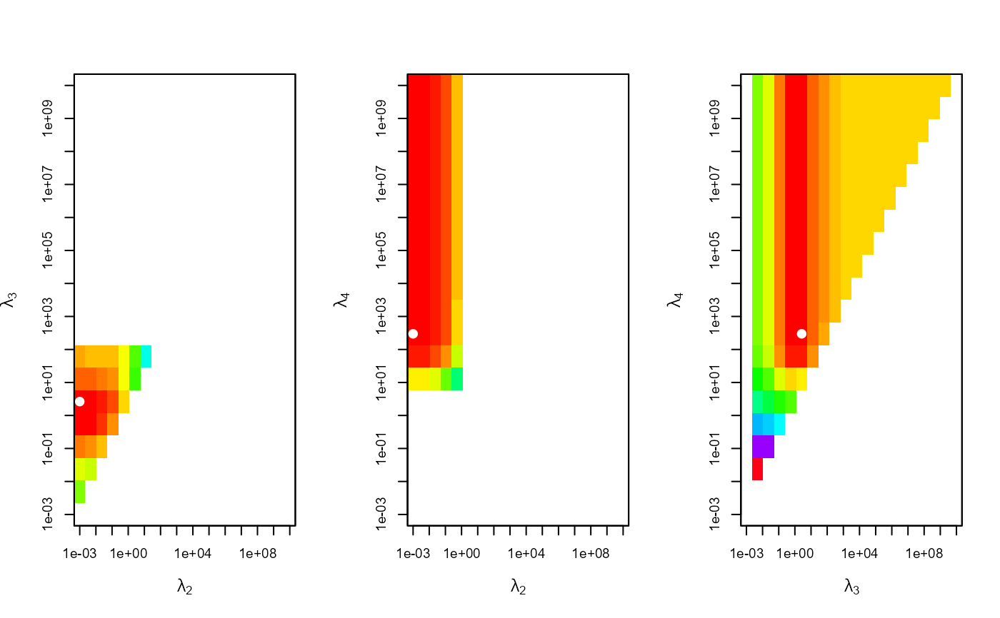

Plot of objective function for finding appropriate smoothing parameters.
Source:R/plot.minLambda.R
plot.minLambda.RdThe objective function \(G\) is plotted on a grid. The minimum is indicated with a white point.
Usage
# S3 method for class 'minLambda'
plot(x, ...)Arguments
- x
Output of function
MinLambda.- ...
Further graphical parameters can be passed.
Details
When minimizing over 2 \(\lambda\)'s, one plot is generated: (\(\lambda_2\) vs \(\lambda_3\)). With 3 \(\lambda\)'s, 3 plots are generated: \(\lambda_2\) vs. \(\lambda_3\), \(\lambda_2\) vs. \(\lambda_4\) and \(\lambda_3\) vs. \(\lambda_4\).
Examples
set.seed(987)
sampleData <- matrix(stats::rnorm(100), nrow = 10)
sampleData[4:6, 6:8] <- sampleData[4:6, 6:8] + 5
# Minimization of two lambdas on a 20-by-20-grid
minLamOut <- MinLambda(Xmu = c(sampleData), mm = 10, nn = 10,
nGrid = 20, nLambda = 3)
# Plot of the objective function
plot(x = minLamOut)
